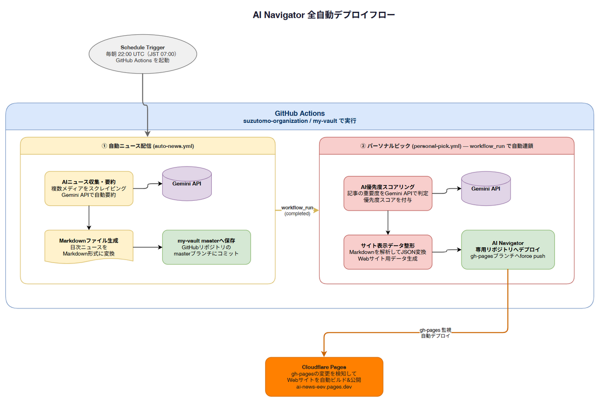

HOW THIS SITE IS MADE
このサイト、エンジニアじゃない人間がAIに喋っただけで作って、
月0円・全自動で毎日勝手に更新されています。
AI Navigatorの運営者は、コードをほとんど書けません。それでもAIとの対話だけでサイトを立ち上げ、日々のニュース収集から公開まで人の作業ゼロで回っています。ここでは、その仕組みをそのまま見せます。
02 / NUMBERS
数字で見る、このサイトの中身
8,833本
累計記事数
889本
うち公式リリース
219日分
カバー期間
(2026/1/31〜9/7)
(2026/1/31〜9/7)
1日2回
更新頻度（全自動）
JST 5:45 / 15:45
JST 5:45 / 15:45
0分/日
人の運用作業
0円/月
運営コスト
ほぼ0行
手書きしたコード
※月額0円は、Gemini APIの無料枠・GitHub Actions（publicリポジトリ）の無料枠・Cloudflare Pagesの無料プランの範囲内で運用できている現時点の実態です。記事数の増加やAPI仕様の変更により、この条件は将来変わる可能性があります。
※「手書きコードほぼ0行」は運営者本人の実感ベースです。実装のほとんどをAIとの対話で組み立てています。
03 / HOW IT WORKS
「全自動」の中身を、やさしく翻訳すると
1
集める — 毎朝・毎夕、AI企業の公式発表やニュースサイトを自動で巡回します。
↓
2
AIが要約する — 集めた記事をAI（Gemini）が読んで、日本語でわかりやすく要約・分類します。
↓
3
勝手に公開される — 要約結果が自動でサイトに反映され、人が触らなくても公開されます。

実際の処理フロー図。「本当に全自動なのか」の裏付けとして、内部の仕組みをそのまま公開しています。
04 / MORE STORIES